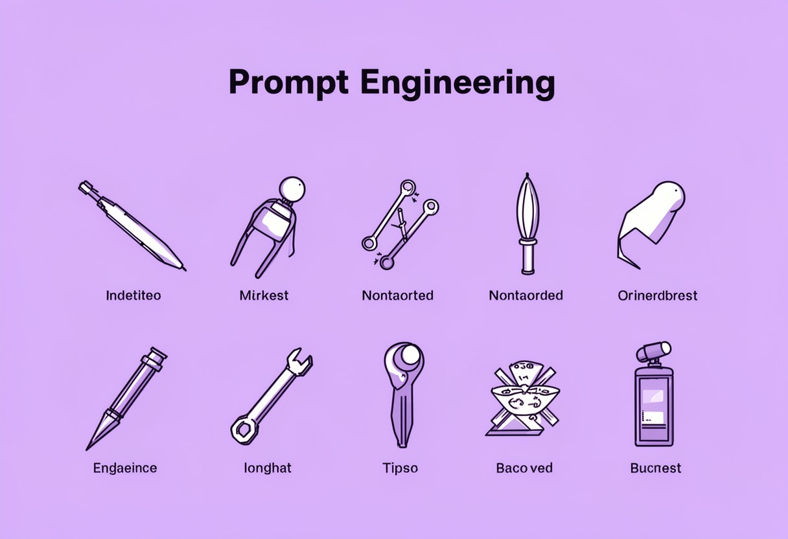

AI对话新手第一课
AI对话新手第一课 很多刚接触大模型的朋友，第一次跟 AI 聊天时，往往带着一种“魔法”的期待，但结果通常是失望的。你问它“帮我写个方案”，它回你一段车轱辘话；你让它“画只猫”，它给你画出一只长着人脸的诡异生物。这时候，…
提示词入门 2026-09-17 · 约5分钟
2026-09-17 · AI对话指南 · 约5分钟读完 · 对话技巧

很多人刚开始接触AI时，最大的感受往往是“玄学”。明明同一个模型，为什么别人生成的文案能直接用，自己写的却全是废话？其实，提示词工程（Prompt Engineering）并没有那么高深，它更像是一种与AI“沟通”的语法。经过这段时间的摸索和测试，我总结了10个最实用、见效最快的技巧，希望能帮你少走弯路，真正掌握与AI协作的核心。
不要直接问AI“帮我写个计划”，而是给它一个具体的身份。例如：“你是一位拥有10年经验的高级市场营销总监，擅长B2B领域的冷启动。”当AI有了角色设定，它的回答逻辑、用词风格和专业度都会立刻提升。这就像面试时，面试官和求职者的对话逻辑完全不同，角色是约束AI输出基调的第一道防线。
AI无法读取你的心声。如果你只说“优化这段代码”，AI不知道你的代码是用什么语言写的，运行在什么环境，有什么性能瓶颈。正确的做法是提供上下文：“这是一段Python爬虫代码，运行在Linux服务器上，目前主要问题是内存占用过高，请帮我优化。”背景越具体，AI的推理路径就越清晰。
当你的输入内容较长，或者包含多种类型的数据时，使用分隔符至关重要。你可以用三引号 """、XML标签 <text> 或Markdown的 # 来区分指令和数据。例如：“请根据以下<文章>内容，提取关键观点。注意：不要修改原文语气。<文章>...具体文本...</文章>。”这能有效防止AI混淆指令和内容，避免“注入攻击”或逻辑混乱。
如果AI总抓不住你想要的格式或风格，最好的办法是给它看例子。这就是“少样本学习”（Few-Shot Learning）。比如你想让AI把新闻改写成微博风格，不要只说“改成微博风格”，而是给出两个例子：
给完例子后，再让它处理新的句子，成功率会大幅提升。
对于复杂的逻辑题或数学题，直接要答案往往出错率高。这时可以使用“思维链”（Chain of Thought）技巧，告诉AI：“请一步一步地思考，展示你的推理过程，最后再给出答案。”这种提示方式能强制AI在输出结论前进行中间步骤的校验，显著降低幻觉和逻辑错误。
如果你需要AI生成的内容用于后续程序处理或表格整理，务必指定格式。常见的有JSON、CSV、Markdown列表等。例如：“请以JSON格式输出，包含字段：name（姓名）、age（年龄）、job（职位）。确保JSON格式有效，不要包含额外解释。”这样你可以直接复制结果去使用，省去了大量人工清洗的时间。
很多时候，我们不仅要知道AI该做什么，还要明确它不能做什么。比如：“请写一篇产品介绍，语气要专业、简洁。不要使用感叹号，不要堆砌形容词，不要超过200字。”负向约束能有效剔除AI常见的“AI味”——那些过度热情、空洞的修饰词，让内容更干练。
提示词工程不是一次性的“咒语”，而是一个迭代过程。如果第一次回答不理想，不要重新写一个完全复杂的提示词，而是基于之前的对话进行追问和修正。例如：“刚才的回答逻辑是对的，但语气太生硬了，请更亲切一些，并增加两个具体的案例。”利用多轮对话的优势，逐步逼近你满意的结果，往往比一开始就试图写出“完美提示词”更高效。
对于重复性的任务，不要每次手打长提示词。建立自己的提示词模板，将可变的部分用变量代替。例如，写邮件模板时，可以将 {收件人姓名}、{项目名称}、{截止日期} 设为变量。每次使用时，只需替换这些变量即可。这不仅提高了效率，还能保证输出风格的一致性。很多高级用户会维护一个自己的Prompt库，分类存放不同场景的模板。
最后一点常被忽视：提示词并非越长越好。在清晰的前提下，尽量精简语言。冗长的提示词可能会引入歧义，甚至让AI抓住次要细节而忽略核心任务。写完后，试着删减掉那些不影响核心意思的修饰词。好的提示词应该是像代码一样，简洁、精确、无歧义。
掌握这10招，你已经在提示词工程入门的道路上迈出了坚实的一步。当然，理论和实操之间还有距离。如果你还在寻找一个能随时练习、且功能全面的平台来测试这些技巧，我非常推荐你去体验一下 小白AI。
免费体验小白AI助手 →这是一个完全免费的一站式AI助手网站，最棒的是它无需注册即可直接使用。除了基础的聊天对话，它还集成了写作辅助、AI绘画甚至AI视频生成功能。你可以用它来测试上面提到的“指定输出格式”技巧，看看生成的JSON是否规范；或者用它的绘画功能来实践“少样本学习”中对视觉风格的描述。对于新手来说，在一个功能丰富且无门槛的环境中反复试错，是成长最快的方式。
提示词工程的本质，是你对任务理解深度的投射。工具在变，技巧在变，但“清晰表达意图”这一核心永远不变。希望这10招能成为你探索AI世界的起点，祝你在与AI的对话中，越来越游刃有余。